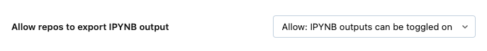

Set up Databricks Repos
Learn how to set up Databricks Repos for version control. Once you set up Databricks Repos, you can use it to perform common Git operations such as clone, checkout, commit, push, pull, and branch management from the Databricks UI. You can also see diffs for your changes as you develop with notebooks and files in Databricks.
Configure user settings
Databricks Repos uses a personal access token (PAT) or an equivalent credential to authenticate with your Git provider to perform operations such as clone, push, pull etc. To use Repos you must first add your Git PAT and Git provider username to Databricks. See Configure Git credentials & connect a remote repo to Databricks.
You can clone public remote repositories without Git credentials (a personal access token and a username). To modify a public remote repository or to clone or modify a private remote repository, you must have a Git provider username and PAT with Write (or greater) permissions for the remote repository.
Repos is enabled by default, but functionality is turned on or off by a workspace admin. For more details on enabling or disabling Git folder support in Repos, read Enable or disable the Databricks Repo feature.
Add or edit Git credentials in Databricks
Important
Databricks Repos supports just one Git credential per user, per workspace.
Select the down arrow next to the account name at the top right of your screen, and then select User Settings.
Select the Linked accounts tab.
If you’re adding credentials for the first time, follow the on-screen instructions.
If you have previously entered credentials, click Config > Edit and go to the next step.
In the Git provider drop-down, select the provider name.
Enter your Git user name or email.
In the Token field, add a personal access token (PAT) or other credentials from your Git provider. For details, see Configure Git credentials & connect a remote repo to Databricks
Important
Databricks recommends that you set an expiration date for all personal access tokens.
For Azure DevOps, Git integration does not support Microsoft Entra ID (formerly Azure Active Directory) tokens. You must use an Azure DevOps personal access token. See Connect to Azure DevOps project using a DevOps token.
If your organization has SAML SSO enabled in GitHub, authorize your personal access token for SSO.
Enter your username in the Git provider username field.
Click Save.
You can also save a Git PAT token and username to Databricks using the Databricks Repos API.
If you are unable to clone the repo and you’re using Azure DevOps with Microsoft Entra ID authentication, see Issue with a conditional access policy (CAP) for Microsoft Entra ID.
Network connectivity between Databricks Repos and a Git provider
Databricks Repos needs network connectivity to your Git provider to function. Ordinarily, this is over the internet and works out of the box. However, you might have set up additional restrictions on your Git provider for controlling access. For example, you might have a IP allow list in place, or you might host your own on-premises Git server using services like GitHub Enterprise (GHE), Bitbucket Server( BBS), or Gitlab Self-managed. Depending on your network hosting and configuration, your Git server might not be accessible via the internet.
Note
If your Git server is internet-accessible but has an IP allowlist in place, such as GitHub allow lists, you must add Databricks control plane NAT IPs to the Git server’s IP allowlist. See Databricks clouds and regions for a list of control plane NAT IP addresses by region. Use the IP for the region that your Databricks workspace is in.
If you are privately hosting a Git server, read Git Server Proxy for Databricks Repos or contact your Databricks account team for onboarding instructions for access.
Security features in Databricks Repos
Databricks Repos has many security features. The following sections walk you through their setup and use:
Use of encrypted Git credentials
An allowlist
Workspace access control
Audit logging
Secrets detection
Bring your own key: Encrypt Git credentials
You can use AWS Key Management Service to encrypt a Git personal access token (PAT) or other Git credential. Using a key from an encryption service is referred to as a customer-managed key (CMK) or bring your own key (BYOK).
For more information, see Customer-managed keys for managed services
Restrict usage to URLs in an allow list
A workspace admin can limit which remote repositories users can clone from and commit & push to. This helps prevent exfiltration of your code; for example, users cannot push code to an arbitrary repository if you have turned on the allow list restrictions. You can also prevent users from using unlicensed code by restricting clone operation to a list of allowed repositories.
To set up an allow list:
Go to the Admin Settings page.
Click the Workspace settings tab.
In the Repos section, choose an option from Repos Git Allow List:
Disabled (no restrictions): There are no checks against the allow list.
Restrict clone, commit & push to allowed Git repositories: Clone, commit, and push operations are allowed only for repository URLs in the allow list.
Only restrict commit & push to allowed Git repositories: Commit and push operations are allowed only for repository URLs in the allow list. Clone and pull operations are not restricted.
In the field next to Repos Git URL Allow List: Empty list, enter a comma-separated list of URL prefixes.
Click Save.
Note
The list you save overwrites the existing set of saved URL prefixes.
It can take up to 15 minutes for the changes to take effect.
Allow access to all repositories
To disable an existing allow list and allow access to all repositories:
Go to the Admin Settings page.
Click the Workspace settings tab.
In the Repos section, under Repos Git Allow List, select Disable (no restrictions).
Control access for a repo in your workspace
Note
Access control is available only in the Premium plan or above.
Set permissions for a repo to control access. Permissions for a repo apply to all content in that repo. You can assign five permission levels to files: No Permissions, Can Read, Can Run, Can Edit, and Can Manage.
When you create a repo, you have Can Manage permission on it. This lets you modify content in the Repo, perform Git operations or modify the remote repository. Develop in your own isolated Repo and collaborate on a shared code base via Git branches and PRs. Don’t give other users Can Edit or Can Manage access to your development Repo.
The following table lists the abilities for each permission:
Ability |
No Permissions |
Can Read |
Can Run |
Can Edit |
Can Manage |
|---|---|---|---|---|---|
List items in repo |
x |
x |
x |
x |
x |
View items in repo |
x |
x |
x |
x |
|
Clone and export items |
x |
x |
x |
x |
|
Run notebooks in repo |
x |
x |
x |
||
Edit notebooks in repo |
x |
x |
|||
Move and rename items |
x |
||||
Modify permissions |
x |
(Optional) Set up a proxy for enterprise Git servers
If your company uses an on-premises enterprise Git service, such as GitHub Enterprise or Azure DevOps Server, you can use Git Server Proxy for Databricks Repos to connect your Databricks workspaces to the repos it serves.
Audit logging
When audit logging is enabled, audit events are logged when you interact with a Databricks repo. For example, an audit event is logged when you create, update, or delete a Databricks repo, when you list all Databricks Repos associated with a workspace, and when you sync changes between your Databricks repo and the remote Git repo.
Secrets detection
Databricks Repos scans code for access key IDs that begin with the prefix AKIA and warns the user before committing.
Allow committing .ipynb notebook output
By default, the admin setting for Repos doesn’t allow .ipynb notebook output to be committed. Workspace admins can change this setting:
Go to Admin settings > Workspace settings.
Under Repos > Allow Repos to Export IPYNB outputs, select Allow: IPYNB outputs can be toggled on.

Important
When outputs are included, the visualization and dashboard configs are preserved with the .ipynb file format.
For information about configuring and committing .ipynb notebook outputs, see Control `.ipynb` notebook output commits.
For information about supported notebook types, see Export and import Databricks notebooks.
Use a repo config file
You can add settings for each notebook to your repo in a .databricks/commit_outputs file that you create manually.
Specify the notebook you want to include outputs using patterns similar to gitignore patterns.
Patterns for a repo config file
The file contains positive and negative file path patterns. File path patterns include notebook file extension such as .ipynb.
Positive patterns enable outputs inclusion for matching notebooks.
Negative patterns disable outputs inclusion for matching notebooks.
Patterns are evaluated in order for all notebooks. Invalid paths or paths not resolving to .ipynb notebooks are ignored.
To include outputs from a notebook path folder/innerfolder/notebook.ipynb, use following patterns:
**/*
folder/**
folder/innerfolder/note*
To exclude outputs for a notebook, check that none of the positive patterns match or add a negative pattern in a correct spot of the configuration file. Negative (exclude) patterns start with !:
!folder/innerfolder/*.ipynb
!folder/**/*.ipynb
!**/notebook.ipynb